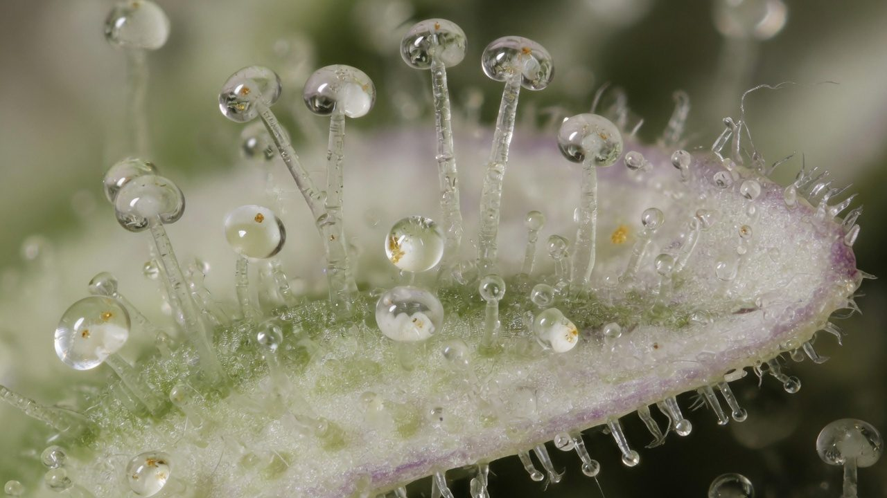
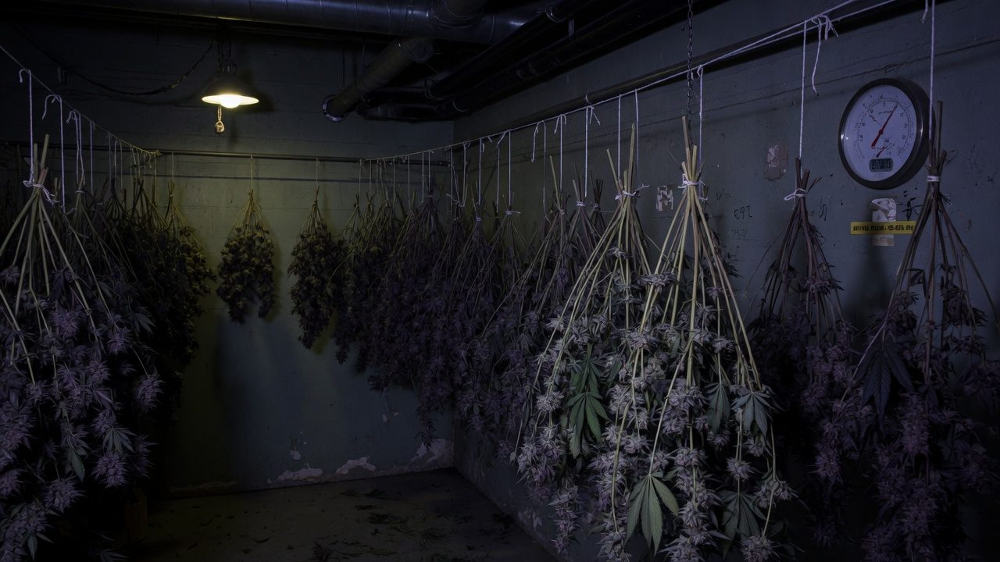
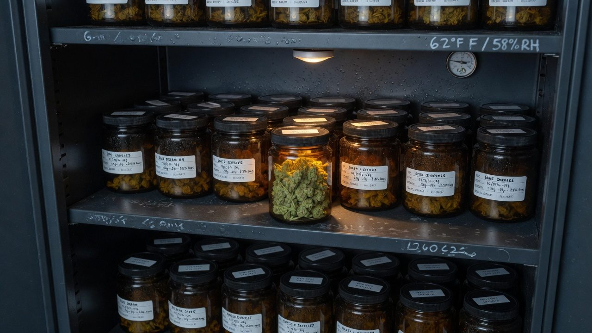
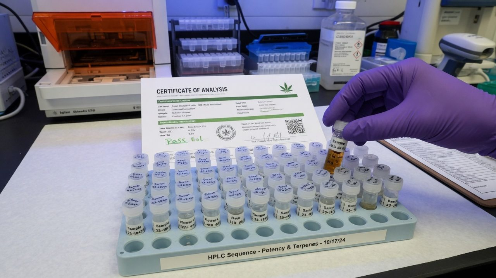

Cannabinoids and Terpenes
The plant makes cannabinoids and terpenes, two groups of compounds, in the same small gland, as acids, on one pathway. This paper tells you where the plant makes each group and how the quantity of each group decreases after harvest. It gives the facts about each compound and corrects incorrect claims about it. It also tells you the decisions of the grower that change the numbers. After you read this paper, you will know how to read a COA. You will know the levers that have an effect and the claims of suppliers that have no data.
Purpose and scope
Two groups of molecules cause the differences in the quality of flower, in the results of a lab test and in the price of flower. The first group is cannabinoids (the potency). The second group is terpenes (the aroma and flavor). The plant makes the two groups in the same small gland on the surface of the flower. This gland is the trichome. Almost all tasks of a grower increase or decrease the quantity of compounds in this gland.
This paper tells you where the plant makes the compounds and how the plant assembles them. It gives the facts about each compound and corrects incorrect claims about it. It tells you how the compounds decrease in quantity after harvest, and it tells you the levers that you have.
Cannabis contains many more compounds than the labels on products show. Reports show more than 500 different compounds in cannabis. Of these compounds, 125 are cannabinoids and approximately 120 are terpenes[1]. Approximately six cannabinoids and eight terpenes are the most important in flower products. When you know these compounds, you can read each COA, each list of cultivars and each claim about a product.
This paper does not tell you the effect of a compound on a person. It gives each effect only as a report or as an effect for which investigations are in progress. Most of the data about effects are of these two types. Also, claims about medical effects are the task of the regulator and of medical personnel, not of a reference for growers. This paper gives chemistry for growers: the molecules, the sources of the molecules, and how to keep the molecules.
Evidence and limitations
We want each paper to be correct. Thus we examine each paper for information that is not solid. This information comes from the view of one grower, from a small number of sources, or from grower methods that have no controlled test. We identify this information, and we do not show it as solid.
Frequently there is no paper for the decision that you must make. Then we use the reports of other growers and the methods that work in the rooms that we know. This information can help you, but it is not the result of a laboratory test. Use the methods that work for your plants, for your room and for your meters. If a table does not agree with your crop, use the data from your crop and record the difference.
- The primary definitions and the units of measurement in the paper
- Safety limits that have a citation to a regulation or a specification
- Target ranges for light, climate and feed in each stage. They are start values that you can change.
- SOPs that work in many rooms, but you must adjust them for your genetics and meters
- A number for yield or potency that you will always get, with no test at many sites
- Controller setpoints from a different facility, with no new calibration
If you find an error, make a report. We will correct it. Make the report on GitHub, with the name of the paper and the information that is incorrect. If you have a source, include it: Make a report of an accuracy problem. The regulations, labels and licenses of your area always override each procedure in these papers. The label weak in a paper shows the points where the risk of an error is highest.
Basic facts of the chemistry
The plant makes all the compounds that have a value in trichome heads. It makes them as acids (THCA and CBDA, not THC and CBD) on one pathway. In the middle of the pathway is one molecule: CBGA, the ‘mother cannabinoid’[3].
The genes control the ratio of the products (the chemotype). They also control most of the terpene profile[7]. The cultivation controls how much the plant makes. After harvest, the quantity of the compounds can only decrease.
The two groups decrease for different causes, and half of this paper is about this difference. Terpenes evaporate. When the temperature of a surface increases, the molecules go from the surface into the air at a higher rate. The light ‘monoterpenes’ evaporate at room temperature. Thus during fast drying with hot air, the room has a strong aroma, but the quantity of terpenes in the product decreases[10].
Cannabinoids oxidize. Oxygen changes the cannabinoids slowly. No enzyme is necessary, and the change cannot occur in the opposite direction. The oxidation of THC makes CBN. Of all the causes, light makes the degradation of THC the fastest[17].
Warm air decreases the flavor. Light, oxygen and a long storage time decrease the potency.
The plant makes the potency and the flavor one time only, in the same gland, as acids that change easily and oils that evaporate easily. The task of the grower has three parts. Select genetics that can make the compounds. Keep the plant in good condition. It can then fill the trichomes. From the time of harvest, keep the product cool, in darkness and sealed, and touch it carefully.

Cells of the trichome that make resin
Cannabis has three types of glandular trichome. The bulbous trichome is very small. The sessile trichome is flat on the surface. The capitate-stalked trichome has a resin head on a stalk, and it is the type that gives the most value. A microscope shows that the heads of stalked trichomes have 12 to 16 secretory disc cells at the bottom. The heads of sessile trichomes have eight.
The stalked trichome is the type that agrees with a high cannabinoid content[2]. A stalked trichome starts from a trichome that looks the same as a sessile trichome, and it changes as the maturity of the flower increases. The ‘frost’ on the flower increases during flowering. The cause is not only that the plant makes more trichomes. The trichomes also change from one type to a different type[2].
The two parts of the trichome have different tasks. The disc cells make the resin. Isolated trichomes show a high expression of the genes for the biosynthesis of cannabinoids and terpenes[2]. When the resin is complete, it goes into the storage cavity.
The only wall of the cavity is a thin layer of wax, the cuticle. The plant does not absorb the resin again. After the plant makes the resin, it stays in the cavity. The cavity gives protection to the resin, but it breaks easily, and it is on the surface of the plant.
The anatomy of the trichome causes three results for the grower:
- The potency is on the surface. The quantity of resin increases with the surface area of the bracts and sugar leaves, not with the mass of the bud. One result is that flower with a high density of bracts and good light has a higher potency in a lab test than low-density flower.
- If you are not careful when you touch the flower, you remove resin. The wall of the cavity is a film of wax. Movement of the flower in equipment, pressure on the flower, many touches and trimming that is not careful break the heads. As a result, the resin stays on gloves and equipment and not in the jar.
- The solventless methods use this anatomy. Ice-water hash and dry sift are methods that remove the heads of trichomes from the flower when the heads are cold. Cold heads break off the stalk and stay in good condition. Thus the methods collect the storage cavities without the other parts of the plant.
A loupe tells you the density of the heads, the size of the heads, and the condition of the heads after you touch them. A loupe gives you this information faster than a lab test. If the heads in the product from your trimming room look rough at 60×, the potency is in the equipment and not in the bag.
Cannabinoid and terpene biosynthesis
Know the pathway, because the chemotypes, CBG flower, THCV and half of the COA are results of the pathway. The plant starts with hexanoyl-CoA, a starter unit that has six carbons and is from the metabolism of fatty acids. The plant adds three malonyl-CoA units to it and makes olivetolic acid, the aromatic core. A polyketide synthase does this together with olivetolic acid cyclase (OAC)[3].
Then the two parts of the molecule connect. An enzyme in a membrane, a prenyltransferase, attaches a terpene unit with ten carbons to olivetolic acid. This terpene unit is geranyl diphosphate (GPP). A test in 1998 first showed the enzyme as GOT, geranylpyrophosphate:olivetolate geranyltransferase.
The product is cannabigerolic acid (CBGA). The enzyme accepts olivetolic acid, but it does not accept olivetol, which is olivetolic acid without the carboxyl group. Thus each product of the pathway is an acid[4].
CBGA is in the middle of the pathway: it is the mother cannabinoid. Three synthases use CBGA at the same time. THCA synthase changes it to THCA, CBDA synthase changes it to CBDA, and CBCA synthase changes it to CBCA[3]. The chemotype locus controls the enzymes that operate correctly in a plant. A subsequent section gives more information about the locus.
The pathway has two more facts. First, the propyl series. When the pathway starts from a shorter starter unit, the same enzymes make divarinic acid, then CBGVA, then THCVA and CBDVA. These compounds are the ‘varin’ cannabinoids, which have a side chain with three carbons, for example THCV[3][1].
Second, the plant makes almost no CBN and a very small quantity of neutral THC. The two compounds are degradation products of the compounds that the enzymes made. The enzymes do not make them[3].
The diagram gives the cause of three results. The first result is CBG flower. Flower with a high content of CBG is from a plant. In this plant, the synthases after CBGA do not operate correctly, thus the quantity of CBGA increases.
The second result is the chemotype. The chemotype is the set of synthase alleles that the plant gets from its parents. Thus no change in the environment can change THC to CBD. The third result is CBN on a COA. CBN is a record of the storage, and it is not a genetic trait. Breeding cannot increase or decrease CBN, because no synthase makes CBN.
Decarboxylation: THCA and THC
Many persons do not know this fact: the plant does not make THC in an important quantity. It makes THCA, which is the same molecule with a carboxyl group (–COOH). THCA does not cause intoxication. Flower that you did not heat contains acid that is not active. Heat removes the carboxyl group as CO₂ gas and makes the molecule active. This reaction is decarboxylation[5].
When a person burns the flower or applies heat to it in a vaporizer, decarboxylation is complete in less than one second. In all other methods (ovens, extracts and the production of edibles), the rate of the reaction controls the result, and tests measured the rate correctly. The data of Wang show that the decarboxylation of cannabis extract between 80 °C (176 °F) and 145 °C (293 °F) is first-order. The rate constants for THCA are 0.18, 0.66 and 1.83 × 10⁻³ s⁻¹ at 80 °C (176 °F), 95 °C (203 °F) and 110 °C (230 °F)[5]. Thus at 110 °C (230 °F), half of the THCA that stays changes to THC in each period of approximately six minutes.
The acids do not change at the same rate. THCA changes approximately two times as fast as CBDA or CBGA at the same temperature. The activation energy of THCA is lower (88 kJ/mol compared with 112 kJ/mol and 109 kJ/mol)[5]. If a person uses the same schedule of heat for CBD material as for THC, the decarboxylation of the CBD material is not complete.
Decarboxylation has two risks. If the time of heat is too short, acid that is not active stays. If the temperature is too high or the time is too long, the THC that the reaction made oxidizes more and changes to CBN. Also, the monoterpenes evaporate very fast at the temperature of decarboxylation, and they go from the material into the air[10].
One result of the tests of the rate is important. In a vacuum, THCA changed to THC and the test found no CBN. When you remove the oxygen from the reaction, the degradation of the THC almost stops[5].
At room temperature, decarboxylation continues at a very low rate. During some months of storage, the acids in the flower change slowly to neutral compounds. Thus the COA of a jar in long storage and the COA at harvest can show different values. The difference occurs before the potency decreases. When the ratio of THCA to THC changes but the total THC stays the same, the cause is decarboxylation. It is not degradation.
Primary cannabinoids
Six cannabinoids are the most important in flower products. For each cannabinoid, the entry below gives the definition (It is), the source, and the incorrect claims about it (It is not). This paper gives effects carefully. An effect that is a report comes from reports of persons who use the compound, or from first tests. It is not a medical effect that sufficient tests show.
It is: the primary cannabinoid that causes intoxication. In the plant, it is almost all THCA. The price of THC-dominant flower is for the quantity of THC.
It is not: an indicator of quality. Two flowers with 20% total THC can be very different in aroma, time since harvest and condition of the resin. The potency is only one item of the COA, and it does not show all the quality of the flower.
It is: a primary cannabinoid that does not cause intoxication. It is the dominant cannabinoid in plants of chemotype III, and it is the primary cannabinoid in hemp production. It is one of the cannabinoids with the most medical investigations.
It is not: a license for claims. A claim about the diseases for which CBD has an effect is the task of medical personnel. The information that a grower gives stops at the measured percentage.
It is: the neutral compound of the mother acid. Most flower has much less than 1% CBG, because the plant uses CBGA to make all the other cannabinoids. Cultivars of chemotype IV have a high quantity of CBGA, because their synthases after CBGA do not operate correctly[8].
It is not: ‘the new THC’. It does not cause intoxication. Suppliers give most claims about it, and the data are not sufficient for them.
It is: the oxidation product of THC. Heat, oxygen and time make CBN, and no enzyme makes it. CBN is a very good sign of degradation, thus persons use the ratio of CBN to THC to get an estimate of the storage time[6].
It is not: a product that causes sedation, with an effect that tests show. The claim that CBN is a ‘sedating cannabinoid’ is frequent, but the data for it are weak. On a COA, read CBN first as a sign of the storage time.
It is: the third branch from CBGA, through CBCA synthase. Persons found CBC in the 1960s, and in the data it is one of the primary cannabinoids[1]. It does not cause intoxication. The quantity is usually a fraction of one percent.
It is not: a cannabinoid that most growers will select for. Labs frequently give no result for CBC.
It is: a compound related to THC that has a short ‘propyl’ side chain, from the propyl series. Persons first found THCV in 1971. Some cultivars contain a much higher quantity[1].
It is not: a product for appetite or energy with an effect that tests show. Investigations of the effects in reports are in progress. The supply is small, and at this time THCV is mostly a task of breeders.
Most of the other cannabinoids in the lists occur in trace quantities only. They are related compounds, isomers, or compounds that heat, light or the lab test makes. They are correct chemistry, but they have almost no effect on the price of flower[1]. A data sheet for a product can give a cannabinoid that is not one of the primary cannabinoids. We recommend that you make sure that the COA gives the quantity of that cannabinoid.
Chemotypes I–V and ratios from the parents
One locus (a position on the DNA) controls the cannabinoid ratio. The locus controls the ratio from the seed, and you cannot change the ratio after that. When you make a cross of a THC-dominant plant and a CBD-dominant plant and examine the offspring, the cannabinoid ratio is a Mendelian trait. There are two alleles, and you can calculate the ratios in the offspring.
The investigations of genetics show that one locus, B, controls the ratio. The locus has two codominant alleles: BT (a THCA synthase that operates correctly) and BD (a CBDA synthase that operates correctly). A plant with two copies of BT is THC-dominant (chemotype I). A plant with two copies of BD is CBD-dominant (chemotype III). A plant with one copy of each is chemotype II, which has a mixed ratio of approximately 1:1. In F₂ crosses, the chemotypes occur in the ratio 1:2:1, which agrees with the Mendelian ratio[7].
The two other chemotypes complete the diagram. Type IV plants have synthases after CBGA that do not operate. Thus the quantity of the mother acid CBGA increases. The result is CBG flower.
Type V plants make no cannabinoids. Crosses with usual plants showed that one recessive allele (o) stops the pathway fully. The ratio is again 1:2:1[8]. Chemotype V is only a plant for fiber breeding and for investigations. It shows that genetics controls each type of the ratio.
An important limit: the locus controls the ratio, but it does not control the quantity. Many genes and the environment control the total quantity of cannabinoid that a plant makes. The environment includes the condition of the canopy, the light and the maturity at harvest. Thus the breeding and the selection of seed control the ratio. The cultivation controls the total quantity[7].
A lab test of a leaf from a plant before the flowering stage gives the chemotype. You can find that a ‘CBD line’ is chemotype II before the room is in the flowering stage. A plant of chemotype II will have a high THC content. If the product is for medical use, the ratios must have a certificate. Make sure of the chemotype before you give bench space to a cultivar.

Terpene groups and volatility
Each terpene contains isoprene units, and each unit has five carbons. Monoterpenes have two units (C10): myrcene, limonene, pinene, terpinolene and linalool. Sesquiterpenes have three units (C15): caryophyllene and humulene[9]. The two types have a different number of units.
Cannabis makes the two types in the same trichomes as the cannabinoids. Reports show approximately 61 monoterpenes and 51 sesquiterpenes in the species[1]. A group of terpene synthase genes controls the terpenes that a cultivar makes in a high quantity[9].
The primary difference of the groups for the grower is the volatility. Volatility is how easily a compound goes from a material into the air. A molecule goes into the air when it has sufficient energy to go from the surface of the liquid. Monoterpenes have a high volatility. Sesquiterpenes have a volatility approximately 100 times lower. Cannabinoids almost do not evaporate.
The measured vapor pressures at 20 °C (68 °F) show this. The vapor pressures of monoterpenes are 1 to 4 Torr (α-pinene 3.57, β-pinene 2.18, myrcene 1.69 and limonene 1.13). The vapor pressures of sesquiterpenes are two orders of magnitude lower (β-caryophyllene 0.021 and α-humulene 0.010). The vapor pressures of cannabinoids are very much lower: CBD 6.3 × 10⁻⁶ Torr and THC 5.2 × 10⁻⁷ Torr[10].
This chart gives information about the drying room. A test measured the volatile oil of the same buds when they were new and after drying in air and storage. The monoterpene proportion of the oil decreased from approximately 92% to 62% in three months, and the sesquiterpene proportion increased[11][1].
The part of the aroma from the monoterpenes evaporates first, and the profile changes to a pepper aroma and a wood aroma. The drying changed the proportions of the oil, but it did not change the list of compounds in the oil[11]. No new compound occurs, and the light fraction decreases. Cold, slow drying in darkness is a method to control the vapor pressure.
The potency stays when the conditions are not good, but the aroma does not. A sample can keep its THC value after some days in hot conditions and one month on a shelf, but its monoterpenes evaporate. When flower has a weak aroma but a good lab result, the cause is the volatility scale in the chart above.
Primary terpenes of flower products
Flower products have a small number of terpene profiles. A test of many thousand retail samples in the US found three primary groups of products. The first group has high caryophyllene and limonene. The second group has high myrcene and pinene. The third group has high terpinolene and myrcene[13]. The test also found that the labels indica, sativa and hybrid do not agree fully with the chemistry[13].
This section gives eight terpenes that you must know. The data for aroma are facts. This paper marks the claims about effects as claims without data.
Monoterpene. Aroma of soil, musk and mango. Flower products most frequently contain myrcene in a high quantity. Myrcene is a primary component of two of the three groups of products[13]. The claim that myrcene is a ‘couch-lock terpene’ has no data. The data show the aroma and the high quantity, not sedation.
Monoterpenes. Aroma of pine and resin. Of the primary terpenes, pinene evaporates the most easily (α-pinene 3.57 Torr[10]), thus pinene is the first terpene to evaporate in drying with warm air. Investigations of the claims about memory and alertness are in progress. At this time, think of pinene as an aroma only.
Monoterpene. A mixed aroma: floral aroma, pine aroma and a small quantity of gasoline aroma. Terpinolene is not frequently the dominant terpene, but when it is, terpinolene gives the aroma of the cultivar. In one of the three groups of products, the terpinolene content is high[13].
Sesquiterpene with an aroma of pepper and clove. Caryophyllene is different from all other terpenes. It is an agonist of the CB2 receptor (Ki = 155 nM), and it does not attach to the CB1 receptor. It is a ‘dietary cannabinoid’ that is also in black pepper[12]. The CB2 receptor does not cause intoxication, thus this effect is pharmacology and not potency. The volatility is low, and caryophyllene stays in the material during drying[10].
Monoterpene alcohol. Aroma of lavender. The quantity in cannabis is almost always small, but the aroma is strong when linalool occurs. The data for the claim about relaxation are mostly from investigations of lavender oil and not from tests on cannabis. Investigations of the claim are in progress, and the data are not sufficient.
Sesquiterpene. Aroma of hops (humulene is the compound with the typical aroma of hops), wood aroma and bitterness. It frequently occurs with caryophyllene. Of the primary terpenes that the test measured, it has the lowest volatility (0.010 Torr[10]).
Monoterpene. Sweet aroma, green aroma and herb aroma. Ocimene frequently occurs as a secondary terpene. In some cultivars, the quantity is high. It evaporates easily in heat, the same as the other monoterpenes.
Suppliers give receptor claims for all terpenes. Caryophyllene is the only terpene for which the data show the receptor effect, and other tests found the same result[12]. A careful test of the other primary terpenes found no effect on the CB1 receptor or the CB2 receptor. The concentrations in the test can occur when a person uses the product[16]. Thus there is one correct example and many examples without data. The entourage effect has the same structure.
Entourage effect: data and claims
The claim is that a mixture of the compounds of cannabis has a stronger effect than one compound only. In this claim, terpenes and the small cannabinoids change the effect of THC. The most important paper about the claim is the paper of Russo from 2011. This paper gives the hypothesis of a synergy of cannabinoids and terpenoids for a range of diseases[14]. The paper is about a hypothesis. The paper gives a condition: a synergy, if tests show it, will make new products possible[14].
The table below gives the data. The data show three facts. Caryophyllene is a CB2 agonist[12]. Cannabis makes many hundred compounds that occur together[1]. In pharmacology, there are many examples of effects of mixtures.
One test gives the opposite result. It used the five terpenes that occur most frequently, with THC and without THC, on human CB1 and CB2 receptors. The test showed no receptor effect and no change of the signal of THC[16].
Other papers do not agree with the claim. These papers tell you that the term started as a ‘hypothetical afterthought’ in 1998. They tell you that suppliers at this time use the term in claims that show far more than the data show. They also tell you that persons do not frequently give information about bad effects of mixtures[15].
| Condition | Claim | Data at this time |
|---|---|---|
| Shown | β-caryophyllene is an agonist of the CB2 receptor (Ki 155 nM), and it has no effect on the CB1 receptor | Other tests found the same receptor effect[12] |
| Shown | Cannabis contains many hundred compounds that occur together | Accepted chemistry[1] |
| Not shown | The most frequent terpenes have an effect at the CB1 receptor or the CB2 receptor, or they change the effect of THC there | Tests on the receptors found no effect[16] |
| Hypothesis | The effects of flower with all its compounds are very different from the effects of isolate THC | It is possible, but no test shows it for products[14][15] |
| Supplier claim | ‘This terpene profile causes this effect’ | No test with controls shows a connection of a profile to an effect[15] |
The data show only these facts. It is possible that mixtures have an effect. One mechanism is correct. The claims in the lists of suppliers that give an effect for each profile have no data. Tests of terpene mechanisms at the CB receptors did not find them.
Terpenes continue to have value. They give the flavor of the product, they are a record of the storage time, and they show the cultivar of the product. This value is sufficient without pharmacology from other sources.
Give the data that you measured. These data are the cannabinoid ratio, the total terpenes, the five terpenes with the highest weight, and the dates of harvest and test. Use aroma terms to give the aroma. Do not give information about effects. Only persons with a license can do this. For medical use, compliance makes this necessary.

Cannabinoid and terpene degradation
From the time of harvest, two changes decrease the quantity of the compounds at the same time, and they have different causes. Terpenes evaporate. They evaporate the fastest when the temperature is high, and monoterpenes evaporate first (previous sections).
Cannabinoids oxidize. The end product of the oxidation of THC is CBN. The causes are oxygen, heat, light and time. Each of the two changes occurs in one direction only. Each decision about storage controls the rate of these two changes.
Flower in storage at 20 to 22 °C (68 to 72 °F) in darkness had a THC content that was, on average, 16.6% lower after the first year. After year two, the THC content was 26.8% lower. After year three, it was 34.5% lower. After year four, it was 41.4% lower. The ratio of CBN to THC increased at a rate that you can calculate. Thus persons use the ratio to get an estimate of the storage time of a sample[6].
Tests of storage for two years give the sequence of the causes. Of all causes, light decreased the cannabinoids the most, and the light was not necessarily bright sunlight. Compared with light, temperature up to 20 °C (68 °F) had no important effect. Oxidation by air also decreased the cannabinoids by an important quantity[17].
The same tests give more information about the mechanisms (Figure 8). When light decreases the THC, the THC does not become CBN. When oxidation by air in darkness decreases the THC, the THC does become CBN. Thus a sample with a high CBN content was in warm storage with air, and it was not necessarily in bright light[17].
Material in good storage was ‘reasonably stable’ for one to two years in darkness at room temperature[17].
Terpenes also decrease in storage, and not only by evaporation. They also decrease by oxidation. Oxidation changes the aroma of the terpenes and not their quantity. Oxidized monoterpenes have a stale aroma: the pine aroma changes to a solvent aroma. The change in the proportions in dried buds in storage (the monoterpene proportion from 92% to 62%) is the result of the two decreases together[11].
Do not keep flower in a clear jar that has lights above it. A clear jar lets light go in, and light is the cause with the largest effect. The lights also give heat, and new air goes into the jar each time you open it. As a result, the flower changes to CBN and the aroma becomes weak. Keep the stock for display in a different area from your other stock.
Cultivation levers and their limits
The list gives the levers in the sequence of their effect on the numbers. It gives the condition of the data for each lever. Many claims of suppliers, and many claims of growers without data, are about these levers.
- Genetics has the largest effect. The effect of each other lever is much smaller. The chemotype is a Mendelian trait[7]. The terpene synthase genes of the cultivar control the terpene profile[9]. The chemistry of flower products is in groups, and each group agrees with a group of cultivars[13]. If the plant cannot make a compound, no setting of the environment will cause the plant to make it.
- Time of harvest. When the ripeness of the flowers increases, the maturity of the trichomes increases and the heads change. The profiles also change, and tests can measure the change[2]. If you harvest on a set date and not on the condition of the trichomes, you do not get all the compounds. The cultivation had a cost for these compounds.
- The condition of the plant and the light. A canopy that is full, in good condition and has good light has more surface area of trichomes. The correct method to get ‘more terpenes’ is more glands. Special inputs do not do this.
- Changes of the environment. The effect is small, the data do not agree, and the effect is different for different cultivars. Read the information about UV below before you accept the cost of equipment for this lever.
- After harvest, the compounds cannot increase, but they can decrease by a large quantity. Drying, curing and storage can only keep the compounds (previous section). They control rates and do not make compounds.
The UV claim is important, because suppliers of equipment use it. The claim is that UV stress causes the plant to make more THC as a protection. The claim uses the data of small tests from many years before. A correct test used current THC-dominant cultivars in a grow room and a range of UV-B doses. The test showed that the concentration of cannabinoids did not increase and the yield did not increase. It also showed that the damage to photosynthesis increased when the dose increased[18].
The test is one careful test on two cultivars. It is not the last result for each genotype and spectrum. But at this time the supplier of UV equipment must show test data for the claim.
Tests with controls give the same result each time. Genetics and the condition of the plant have the largest effect. ‘Stress hacks’ in the environment give small changes in chemistry. The changes are different in each test and different for each cultivar, and they decrease the yield. We recommend that each input with the claim of +30% terpenes has a COA pair and the name of a cultivar. If it does not, the claim has no data.

Cannabinoids and terpenes on a COA
A COA is a table with the results of all the chemistry in this paper. The cannabinoid section of the COA gives a result for each acid and a result for each neutral compound. New flower in good storage has almost all the THC as THCA and a small quantity as THC. Use the number for decarboxylation from Figure 3 to get the total:
When you read more than the primary number on the COA, the COA is a record of the sample:
- High THCA, low THC and almost no CBN: the material is new, and the storage was cool. You want this result.
- The neutral fraction increases slowly: the cause is storage time or heat. Decarboxylation occurred in storage (Section 5).
- CBN occurs and increases: CBN is the sign of the storage time. The storage was warm, had air, or was only for a long time[6].
- The terpene total is low, and the quantity of sesquiterpenes is high for the cultivar. The monoterpenes evaporated. The cause is hot drying or a long time on a shelf[11].
- Chemotype that does not agree: a ‘CBD cultivar’ with a large THC content has genetics of chemotype II. The B locus causes this result[7].
A terpene panel typically gives a list of compounds in percent by weight. A small number of compounds make most of the total. The shape of the profile shows the cultivar[13], and the condition of the profile is the record of your procedures. The paper about lab testing in this group of papers gives information about sampling, uncertainty and the differences in the results of different labs.
One COA gives the data of one sample. Two COAs of the same lot give the data about your storage: one COA at packaging and one COA some months after. The differences are that THCA changes to THC, CBN occurs, and monoterpenes evaporate. These differences are the chemistry of degradation in this paper, measured on your product.
Frequent causes of low cannabinoid and terpene content
Each cause in this section is a result of the chemistry in the previous sections. The sign in the COA shows the cause after the cause occurred. The correction makes sure that the cause does not occur again.
The maturity of the trichome heads is too low, or it is after the peak. The profile of the cultivar does not become full[2].
Sign in the COA: the totals of potency and terpenes are lower than the known maximum for the cultivar.
Correction: examine the trichomes with a loupe. Harvest on the condition of the plant, not on a set date.
Monoterpenes evaporate from warm surfaces. The vapor pressure causes this[10][11].
Sign in the COA: the aroma is weak, the terpene total in the panel is low, and the proportion of sesquiterpenes is high.
Correction: dry the flower with cool air, slowly, and in darkness. A room that is cold to a person is approximately correct.
In the papers about storage, light is the cause that decreases the cannabinoids the most[17].
Sign in the COA: the THC content decreases, but the CBN content does not increase by the same quantity.
Correction: use packaging that does not transmit light, keep the product in rooms in darkness, and do not keep product for display in windows.
Each movement of the flower in equipment breaks heads, because the wall of a head is a cuticle. Flower in small pieces has a larger surface area, thus evaporation and oxidation are faster.
Sign in the COA: the loose material that falls from the buds has a higher potency in a lab test than the buds. The aroma of the product decreases in some days.
Correction: use careful settings for trimming and do not move the product many times. Make the flower into small pieces only at the time that you use it.
The claims for UV equipment and stress procedures use only data from many years before. The test with controls found that the cannabinoids did not increase and that the damage increased when the dose increased[18].
Sign in the COA: the cost increases, but the COAs do not change.
Correction: make sure that the supplier gives COA pairs for your cultivar. Do this before you accept the cost of equipment that gives light with no value in the product.
Reference tables
| Compound | Parent acid | Source | It is | It is not |
|---|---|---|---|---|
| Δ9-THC | THCA | THCA synthase ← CBGA | The cannabinoid that causes intoxication. The price is for the quantity of THC. | An indicator of quality |
| CBD | CBDA | CBDA synthase ← CBGA | A primary cannabinoid that does not cause intoxication | A license for medical claims |
| CBG | CBGA | The middle of the pathway | The neutral compound of the mother acid. The primary cannabinoid of chemotype IV. | ‘The new THC’ |
| CBN | None | Oxidized THC. No enzyme makes it. | A sign of the storage time[6] | A product of biosynthesis, or a cause of sedation that tests show |
| CBC | CBCA | CBCA synthase ← CBGA | The small third branch. Trace quantities. | A compound that most COAs give a result for |
| THCV | THCVA | Propyl series (‘varin’) | A compound related to THC with a short side chain. The quantity is different for different cultivars. | A compound with an effect that the data show |
| Terpene | Group | Aroma | Vapor pressure at 20 °C (Torr) | Stays in the material during drying |
|---|---|---|---|---|
| α-Pinene | Monoterpene | Pine, resin | 3.57[10] | Very low. It evaporates first. |
| β-Pinene | Monoterpene | Pine, herb aroma | 2.18[10] | Low |
| Myrcene | Monoterpene | Soil, mango | 1.69[10] | Low |
| Limonene | Monoterpene | Citrus peel | 1.13[10] | Low |
| Terpinolene | Monoterpene | Floral aroma, pine, gasoline aroma | — | Low (monoterpene) |
| Ocimene | Monoterpene | Sweet aroma, green aroma | — | Low (monoterpene) |
| Linalool | Monoterpene (alcohol) | Lavender | — | Average |
| β-Caryophyllene | Sesquiterpene | Pepper, clove | 0.021[10] | High. It also has the CB2 receptor effect[12] |
| α-Humulene | Sesquiterpene | Hops, wood aroma | 0.010[10] | The highest of the primary terpenes |
| Important number | Value | Information |
|---|---|---|
| Mass number for decarboxylation | 0.877 | Total THC = THC + 0.877 × THCA on each COA |
| THCA half-life at 110 °C | ≈ 6.3 min | The half-life of CBDA and CBGA is approximately two times longer[5] |
| Monoterpene proportion, new product → product in storage | ≈ 92% → 62% | Three months of drying and storage[11] |
| The THC content decreases in year one at 20–22 °C (68–72 °F) | ≈ 17% | Storage in darkness. Light makes the potency decrease faster[6][17] |
| Caryophyllene CB2 Ki | 155 nM | The only connection of a terpene to a receptor that tests show[12] |
| Ratio of chemotypes in the offspring | 1:2:1 | One locus with codominant alleles[7] |
Control of cannabinoids and terpenes
The plant makes the compounds one time. After that, the quantity can only decrease. The genetics set the profile. The trichomes make the compounds and keep them as acids that change easily and oils that evaporate easily. From the time of harvest, you control two rates: evaporation for the flavor and oxidation for the potency.
No product can add the compounds again. The complete procedure after harvest has five parts: cool storage, darkness, sealed containers, careful movement of the product, and a short storage time. The COA is the correct record of each decision above.
Read these papers after this paper: lab testing and COAs, harvest, dry, trim and cure, and hash and rosin pressing. The paper about lab testing and COAs tells you how labs measure these numbers, and how labs measure them incorrectly. The paper about harvest, dry, trim and cure tells you the procedure that decreases or keeps the terpenes. The paper about hash and rosin pressing tells you the result when you collect the trichome heads and use the compounds in a different product.
References
- Radwan MM, Chandra S, Gul S, ElSohly MA (2021). Cannabinoids, phenolics, terpenes and alkaloids of cannabis. Molecules 26(9):2774. (125 cannabinoids and 120 terpenes among >500 reported constituents.) https://pmc.ncbi.nlm.nih.gov/articles/PMC8125862/
- Livingston SJ, Quilichini TD, Booth JK, et al. (2020). Cannabis glandular trichomes alter morphology and metabolite content during flower maturation. The Plant Journal 101(1):37-56. https://onlinelibrary.wiley.com/doi/10.1111/tpj.14516
- Gülck T, Møller BL (2020). Phytocannabinoids: origins and biosynthesis. Trends in Plant Science 25(10):985-1004. https://www.cell.com/trends/plant-science/fulltext/S1360-1385(20)30187-4
- Fellermeier M, Zenk MH (1998). Prenylation of olivetolate by a hemp transferase yields cannabigerolic acid, the precursor of tetrahydrocannabinol. FEBS Letters 427(2):283-285. https://febs.onlinelibrary.wiley.com/doi/10.1016/S0014-5793(98)00450-5
- Wang M, Wang Y-H, Avula B, et al. (2016). Decarboxylation study of acidic cannabinoids: a novel approach using ultra-high-performance supercritical fluid chromatography/photodiode array-mass spectrometry. Cannabis and Cannabinoid Research 1(1):262-271. https://pmc.ncbi.nlm.nih.gov/articles/PMC5549281/
- Ross SA, ElSohly MA (1997). CBN and Δ9-THC concentration ratio as an indicator of the age of stored marijuana samples. Bulletin on Narcotics (UNODC) 49(1-2):139-147. https://www.unodc.org/unodc/en/data-and-analysis/bulletin/bulletin_1997-01-01_1_page008.html
- de Meijer EPM, Bagatta M, Carboni A, et al. (2003). The inheritance of chemical phenotype in Cannabis sativa L. Genetics 163(1):335-346. https://pmc.ncbi.nlm.nih.gov/articles/PMC1462421/
- de Meijer EPM, Hammond KM, Sutton A (2009). The inheritance of chemical phenotype in Cannabis sativa L. (IV): cannabinoid-free plants. Euphytica 168:95-112. https://link.springer.com/article/10.1007/s10681-009-9894-7
- Booth JK, Bohlmann J (2019). Terpenes in Cannabis sativa — from plant genome to humans. Plant Science 284:67-72. https://www.sciencedirect.com/science/article/pii/S0168945219301190
- Eyal AM, Berneman Zeitouni D, Tal D, et al. (2023). Vapor pressure, vaping, and corrections to misconceptions related to medical cannabis' active pharmaceutical ingredients' physical properties and compositions. Cannabis and Cannabinoid Research 8(3):414-425. https://pmc.ncbi.nlm.nih.gov/articles/PMC10249740/
- Ross SA, ElSohly MA (1996). The volatile oil composition of fresh and air-dried buds of Cannabis sativa. Journal of Natural Products 59(1):49-51. https://pubs.acs.org/doi/10.1021/np960004a
- Gertsch J, Leonti M, Raduner S, et al. (2008). Beta-caryophyllene is a dietary cannabinoid. PNAS 105(26):9099-9104. (Selective CB2 agonist, Ki = 155 ± 4 nM; no CB1 binding.) https://pmc.ncbi.nlm.nih.gov/articles/PMC2449371/
- Smith CJ, Vergara D, Keegan B, Jikomes N (2022). The phytochemical diversity of commercial cannabis in the United States. PLoS ONE 17(5):e0267498. https://journals.plos.org/plosone/article?id=10.1371/journal.pone.0267498
- Russo EB (2011). Taming THC: potential cannabis synergy and phytocannabinoid-terpenoid entourage effects. British Journal of Pharmacology 163(7):1344-1364. https://pmc.ncbi.nlm.nih.gov/articles/PMC3165946/
- Cogan PS (2020). The ‘entourage effect’ or ‘hodge-podge hashish’: the questionable rebranding, marketing, and expectations of cannabis polypharmacy. Expert Review of Clinical Pharmacology 13(8):835-845. https://www.tandfonline.com/doi/abs/10.1080/17512433.2020.1721281
- Finlay DB, Sircombe KJ, Nimick M, Jones C, Glass M (2020). Terpenoids from cannabis do not mediate an entourage effect by acting at cannabinoid receptors. Frontiers in Pharmacology 11:359. https://www.frontiersin.org/journals/pharmacology/articles/10.3389/fphar.2020.00359/full
- Fairbairn JW, Liebmann JA, Rowan MG (1976). The stability of cannabis and its preparations on storage. Journal of Pharmacy and Pharmacology 28(1):1-7. https://academic.oup.com/jpp/article-abstract/28/1/1/6196321
- Rodriguez-Morrison V, Llewellyn D, Zheng Y (2021). Cannabis inflorescence yield and cannabinoid concentration are not increased with exposure to short-wavelength ultraviolet-B radiation. Frontiers in Plant Science 12:725078. https://pmc.ncbi.nlm.nih.gov/articles/PMC8593374/
Each citation in the paper, for example [1], refers to an item in this list. Each item is a primary source or an instruction from an authority, unless the item shows a different type. The results of cannabis tissue culture change much with the genotype. Before you use the dilutions, hormone doses and local regulations, make sure that they agree with the primary sources.